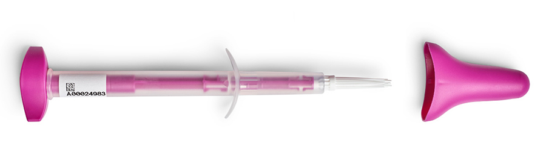

Hay que tener en cuenta varios factores cuando se va a implementar la modalidad de recogida de muestra mediante autotoma a gran escala [14]Hawkes D, Keung MHT, Huang Y, McDermott TL, Romano J, Saville M, et al. Self-Collection for Cervical Screening Programs: From Research to Reality. Cancers (Basel) [Internet] 2020 [2021 marzo 18];12(4).. Es necesario tener en cuenta una serie de puntos antes de tomar una decisión en cuanto a la prueba del VPH, el dispositivo y otras consideraciones.
En resumen, los siguientes son algunos de los factores que hay que tener en cuenta:
Como se ha explicado anteriormente, las pruebas basadas en la técnica de la PCR para detectar el ADN del VPH tienen mayor exactitud en comparación con las pruebas de amplificación de señales o de ARN. Curiosamente, se ha visto que varios cambios en los pasos de procesamiento podrían mejorar la exactitud de la prueba de ARN (por ejemplo, añadiendo un paso adicional de calentamiento). Para más detalles, ver Borgfeldt y Forslund [15]..
Para cualquier ensayo seleccionado es importante validar el proceso completo, incluyendo la elección del tipo de dispositivo, el medio de almacenaje y el ensayo/sistema. Esto pueden realizarlo el fabricante o los laboratorios objetivo. Algunos dispositivos pueden ser transportados en seco al laboratorio mientras otros se transfieren a un medio líquido para su transporte. El proceso, el volumen de muestras y la manipulación de las muestras pueden afectar al rendimiento de las pruebas de detección del VPH. Por tanto, es necesario disponer de un control de calidad para optimizar el rendimiento de todo el proceso.
Al seleccionar el ensayo que se utilizará con las muestras recogidas por autotoma es importante tener un control de la presencia de material celular humano para garantizar la calidad de las muestras. Según Hawkes et al. [14]Hawkes D, Keung MHT, Huang Y, McDermott TL, Romano J, Saville M, et al. Self-Collection for Cervical Screening Programs: From Research to Reality. Cancers (Basel) [Internet] 2020 [2021 marzo 18];12(4). la proporción de muestras no válidas es superior en aquellas recogidas por autotoma en comparación con las recogidas por los profesionales, posiblemente debido a la falta de suficiente material celular humano. Es importante dar instrucciones claras a las mujeres sobre la mejor manera de obtener la muestra, ya que ello puede reducir el número de muestras no válidas.
Existe una amplia gama de dispositivos que se pueden utilizar para la autotoma (véase la figura), como hisopos secos o cepillos con o sin medio de transporte [15].. Es necesario evaluar el rendimiento y el propósito de estos dispositivos. En función del programa de cribado, los dispositivos pueden entregarse directamente a las mujeres, enviarse por correo o que la mujer lo recoja en un sitio determinado como una farmacia o un centro de salud. Los dispositivos deben ser adecuados para la estrategia de cribado en la que se quieren utilizar.
FIGURA 2 Ejemplos de diferentes dispositivos de autotoma para el VPH usados para recolección vaginal. Fuente: Bishop E. et al. [16]..
Evalyn Brush

Catch-All Swab
Los estudios que evaluaron la exactitud de las pruebas del VPH según distintos dispositivos de autotoma no han mostrado diferencias, en comparación con las muestras recogidas por los profesionales sanitarios [6].,[17].. Sin embargo, hasta ahora el número de estudios comparativos entre dispositivos es limitado. Dado que cada dispositivo y medio de transporte puede tener una estabilidad variable desde la recogida de muestra hasta su procesamiento, es importante que, antes de su implementación en el cribado, se valide clínicamente todo el flujo de trabajo, incluido el dispositivo de recogida, el medio de recogida, el procedimiento de extracción del ADN y la prueba del VPH utilizada para detectar la presencia del virus en las muestras recogidas por la propia mujer. En 2022 la nueva normativa europea IVDR lo exigirá.
Ejemplo
El-Zein et al. [17]. estudiaron dos muestras consecutivas obtenidas por autotoma, una con HerSwab™ y otra con hisopo Cobas®, después de recibir instrucciones, entre mujeres derivadas a colposcopia. El orden del muestreo fue aleatorizado. Posteriormente, el colposcopista recogió una muestra de cuello uterino y realizó un examen colposcópico. Entre ambos dispositivos se observó una elevada concordancia y medidas de sensibilidad similares para detectar CIN2+, en comparación con las muestras recogidas por el personal sanitario.
Idea clave
No se han observado diferencias entre los dispositivos de autotoma, aunque debe tenerse en cuenta si la tecnología de detección del VPH utilizada está validada para el uso de muestras recogidas mediante autotoma.
La estrategia de utilizar autotoma para la recogida de muestra cérvico-vaginal es una estrategia excelente para el cribado de cáncer de cuello uterino cuando la prueba primaria es la detección del ADN del VPH basado en PCR.